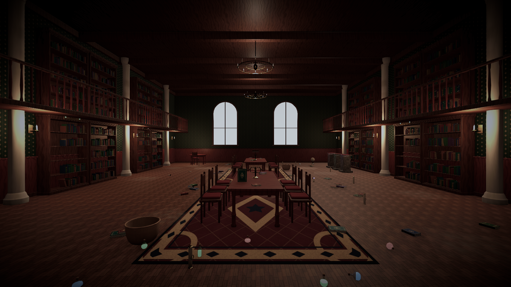
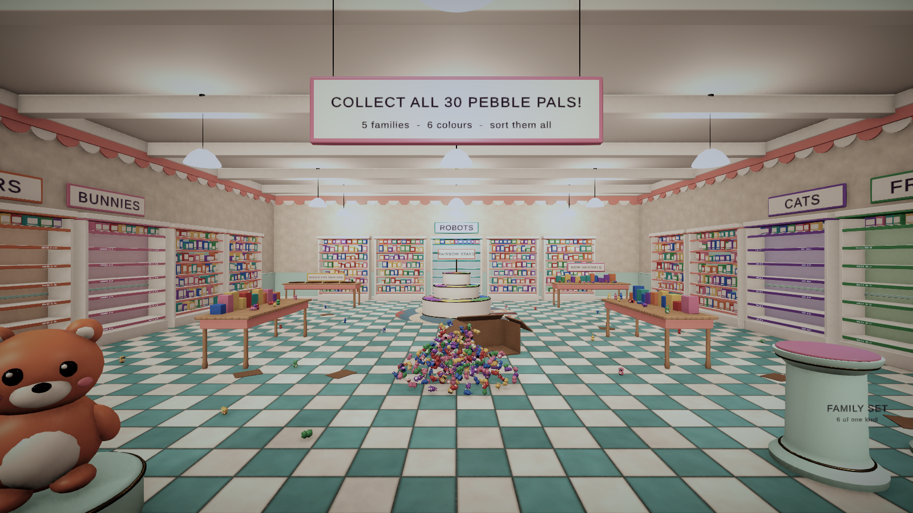
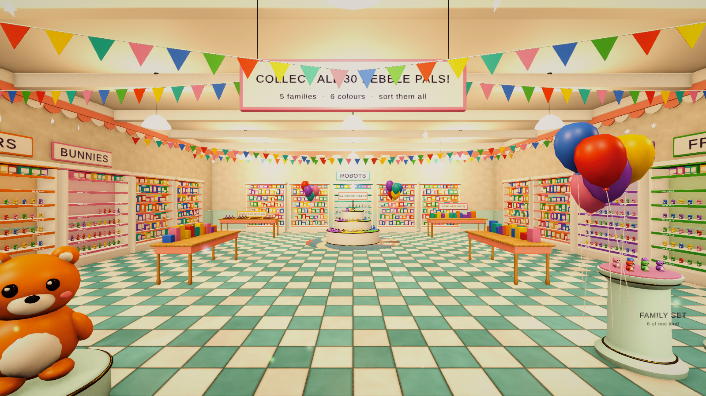
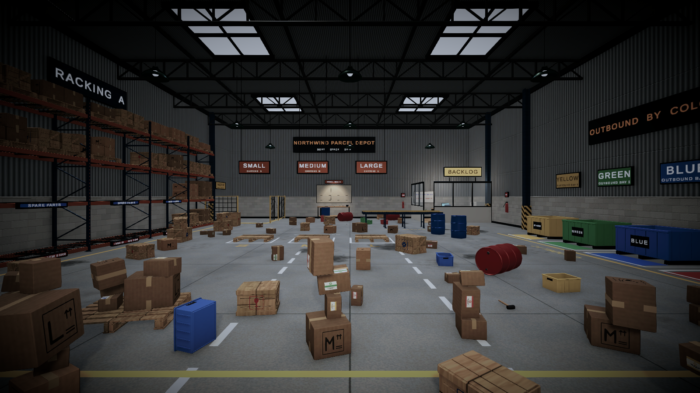
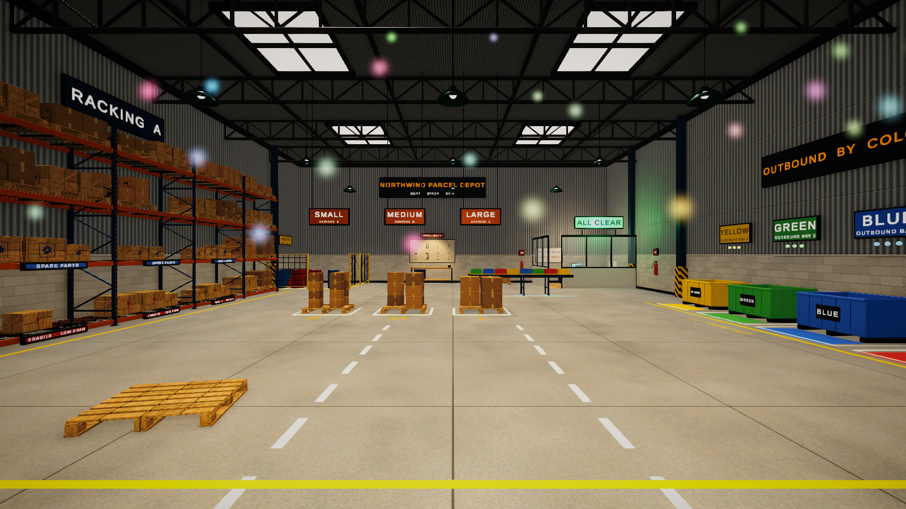

Demo Scenes
Four complete levels, a main menu and a sandbox show the same framework producing very different games. No demo uses gameplay code of its own: every behaviour is configuration.
| Scene | Level | Highlights |
|---|---|---|
TidyUp_MainMenu | - | Main menu, level select, settings, controls, credits over a live 3D backdrop |
TidyUp_ArcaneLibrary | 1 · Easy | Subject shelves, alphabetical rule shelves, sequential volumes, colour racks, containers, snap slots, free zone, tutorial, before/after mood |
TidyUp_ToyStore | 2 · Normal | Hundreds of collectibles, species and colour sorting, grid shelves, matching sets, quantity objectives, combos |
TidyUp_Warehouse | 3 · Hard | Colour bins with fill visuals, size-based stacking on pallets, tool wall, physics crates, countdown timer with fail state |
TidyUp_CozyRoom | 4 · Relaxed | Cleaning stains, sponge and vacuum tools, clutter disposal, hidden keepsakes, laundry basket fill stages, strongest before/after |
TidyUp_Sandbox | Not in catalog | The finished result of Creating Your First Level |
Arcane Library

What it demonstrates
- Category sorting — four subject bookcases (Spell Books, Botany, History, Star Charts) using
TidyRowZoneshelves that pack books by real width. - Rule assets — the spell book case splits titles A–M and N–Z with two Alphabetical Range Rule assets.
- Ordering — the Encyclopaedia Arcana shelf requires volumes I–VIII in sequence and locks when complete.
- Tag sorting — three potion racks (
TidySlotGroupwith manual anchors) accept Potions + Red / Blue / Green. - Containers — wicker scroll baskets with a natural pile layout.
- Snap slots — candles on candelabras; crystals on colour-matched pedestals.
- Free placement — ink and quill on the writing desk (definition filter).
- Tutorial — seven steps teaching looking, moving, picking up, placing, inspecting and hints.
- Before/After — a desaturated "messy" volume cross-fades into a warm one, chandeliers brighten, dust patches vanish and magic motes appear as progress grows.
How it is structured
Environment room shell, columns, gallery, sconces, windows, chandeliers (static)
Furniture bookcases with decorative book rows, tables, chairs, racks, pedestals (static)
Placement Targets shelf rows, potion racks, baskets, candle slots, pedestals, desk
Clutter 84 interactive objects
Before After transformation controller with volume, light and reveal reactors
TidyLevelSystems level manager (Level_01_ArcaneLibrary), hints, feedback, tutorial, highlighter
TidyPlayer first person controller, interactor, preview, cleaning, camera punch
TidyHUD HUD, pause, settings, controls, results, mobile controlsHow to modify it
Open Demo/Data/Levels/Level_01_ArcaneLibrary to change objectives or stars. Select any shelf under Placement Targets to change what it accepts. Add a new subject by creating a category, a few object definitions and a new shelf row — the level picks them up automatically if the "Shelve the books" objective filter includes the new category.
Toy & Collectible Store — "Pebble Pals Toy Shop"


What it demonstrates
- Quantity — 348 interactive objects (30 "Pebble Pals" definitions: 5 families × 6 colours, plus 4 mystery capsule colours) as a performance showcase.
- Category sorting on grids — one
TidySlotGroup(11 × 6) per family. - Colour sorting — the tiered Rainbow Stand: six manual-anchor slot groups, each accepting one colour tag.
- Grouping — Family Set pedestals use Same Category grouping (six of one family, any colour); Triplet trays use Same Definition (three identical figures). Objects that would break a group are rejected at placement.
- Containers — capsule bins by colour.
- Quantity objectives — "Stock 110 Pebble Pals" counts placements anywhere; shelf and stand objectives count specific targets.
- Combos and optional goals — a score objective and a time objective reward fast chains.
How to modify it
Each figure family is a category under Pebble Pals; add a family by creating a category, six definitions and a shelf. Change goals in Level_02_ToyStore.
Warehouse — "Northwind Parcel Depot"


What it demonstrates
- Tag sorting into containers — four colour bins (Pile layout) with rising fill plates and indicator lamps.
- Size rules and stacking —
TidyStackPoints on pallets accept cartons through Numeric Range Rule assets on Size (Rule_Warehouse_SizeSmall/Medium/Large). - Rows on racks — fragile and spare-parts crates on pallet-rack beams.
- Snap slots — a pegboard tool wall with painted outlines (manual-anchor slot group).
- Free placement with rotation snap — the hazmat cage (45° steps).
- Physics handling — drums, fuel cans and large crates use the physics profile; everything else is controlled.
- Countdown with fail state — 15-minute limit, stars by completion time.
Cozy Room — "Moving-in Day"

What it demonstrates
- Cleaning — 11
TidyCleanablestains on floor, wall and furniture; a sponge (TidyCleaningTool) cleans faster and in a radius. - Clutter — rubbish into consuming bins, dust bunnies collected with a handheld vacuum (Collects Clutter).
- Find objects — three keepsakes hidden under the bed and behind furniture (Requires Discovery).
- Hidden containers — a laundry basket with fill stages, a toy chest.
- Stacks, rows, slots and free zones — wardrobe stacks, bookshelf row, shoe rack, kitchenette tray.
- Tutorial — teaches scrubbing, dropping and disposal.
- Stars by mistakes — relaxed play without a timer.
Regenerating demo content
All demo meshes, textures, sounds, prefabs and scenes are produced by the editor pipeline under Tools > Tidy Up Framework > Demo Content. You never need to run it: the generated assets are included. It is provided so you can study how content is assembled, and to regenerate assets if you modify the generators (Demo/Editor).